Наука · журнал «ДентАрт» 2017 №2
Анатомо-морфологічні, топографічні та біомеханічні особливості міжзубних контактних поверхонь постійних зубів. Частина ІI
ANATOMIC-MORPHOLOGICAL, TOPOGRAPHICAL AND BIOMECHANICAL FEATURES OF THE INTERDENTAL CONTACT POINTS OF PERMANENT TEETH. PART ІI
З допомогою цифрової мікроскопії було досліджено проксимальні поверхні 120 постійних зубів, видалених за медичними показаннями, і міжзубні контактні пункти на гіпсових моделях. Аналіз отриманих результатів засвідчив, що з точки зору біомеханіки, мікрорельєф контактних майданчиків багато в чому аналогічний суглобовим поверхням складних суглобів. Для кожної групи зубів були встановлені характерні особливості форми і топографії контактних майданчиків. Уперше систематизовано основні типи міжзубних контактних пунктів у вигляді оригінальної авторської класифікації.
(Частину I читайте в «ДентАрті» №1/2017 р.)
Рух — вселенський закон механіки
Життя вимагає руху.
Арістотель (384-322 рр. до н.е.)
Рух — це особлива форма існування матерії у Всесвіті, зі всіма змінами і процесами, що відбуваються в ній. Як твердить закон всесвітнього тяжіння Ньютона (1687), між усіма тілами у Всесвіті діє сила взаємного тяжіння. Тому всі відомі форми матерії взаємопов'язані і взаємозалежні, але традиційно умовно розрізняють чотири види: фізичну, хімічну, біологічну і соціальну. Фізика вивчає фізичну форму руху матерії, яку також умовно поділяють на механічну, молекулярно-теплову та ін.
Для розуміння і правильної оцінки всього різноманіття та неймовірної складності виконуваних функцій в організмі на макро- і мікрорівнях нерідко вдаються до їх вивчення та опису фізичними законами, адже часто можна виділити близькі за характером процеси: кровообіг (гідродинаміка), поширення пружних коливань по судинах і тканинах (коливання та хвилі), механічна робота серця (механіка), генерація біопотенціалів (електрика) і т. п. Оскільки багато методів діагностики та дослідження фізіологічних і патологічних станів організму засновані на використанні фізичних принципів та ідей, це стало підставою для формування самостійної науки — біофізики, яка вивчає фізичні та фізико-хімічні процеси у живих організмах, а також ультраструктуру біологічних систем на всіх рівнях організації — від субмолекулярного і молекулярного до клітини і цілого організму.1
На нинішньому етапі матеріально-технічного розвитку в стоматології усе істотнішими стають не тільки володіння знаннями про механічну міцність матеріалів та біологічних тканин (м'яких чи твердих), еластичність, стійкість до багаторазових навантажень та інші властивості, вираженими сухими цифрами, але й здатність практичного застосування законів механіки і статики для аналізу клінічної ситуації та прогнозу розподілу функціонального жувального навантаження у майбутній реставрації.
Коротко викладемо деякі поняття з галузі механіки, пов'язані з рухом. Зміну взаємного розташування точок тіла, що призводить до зміни його форми і розмірів, називають деформацією. Деформація твердого тіла під впливом зовнішньої механічної сили називається пружною, якщо після припинення дії сили вона зникає, а якщо деформація зберігається, то її називають пластичною. При неповному зникненні деформації, коли зберігаються наслідки зовнішнього впливу, вживають термін пружнопластична деформація. Найпростішим видом деформації є розтягування (стискання), наприклад, при дії сили, спрямованої уздовж осі стрижня.1 Вигин як один з видів деформації характеризується викривленням осі або серединної поверхні деформованого об'єкта (балка, стрижень) під дією зовнішніх сил. При вигині один зовнішній шар стрижня стискається, а інший зовнішній шар розтягується. Середній шар, який називають нейтральним, змінює лише свою форму, зберігаючи довжину.1
Ще в 1905 році Ch. Godon (фото 1) висунув теорію артикуляційної рівноваги, в якій зубна система становить собою єдине ціле за умови безперервності зубних рядів, а кожен зуб перебуває під впливом замкнутого ланцюга сил, що утримують його в одному і тому ж положенні, бо їх рівнодійна* дорівнює нулю (рис.1). Це положення Ch. Godon зобразив у вигляді паралелограма**.2

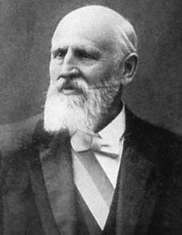
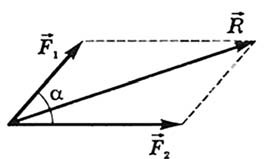
Рис. 1. Паралелограм сил Годона.3 Сила — величина векторна. Дві сили, що діють на тіло, складаються за правилом паралелограма*** (векторно).4
* Якщо дана система сил еквівалентна одній силі, то ця сила називається рівнодійною даної системи сил.
** Паралелограмом називається чотирикутник, у якого сторони, що лежать напроти, попарно паралельні. Ознаки паралелограма: 1) дві його протилежні сторони рівні і паралельні; 2) протилежні сторони попарно рівні; 3) протилежні кути попарно рівні; 4) діагоналі точкою перетину діляться навпіл.
*** Паралелограм сил — геометрична побудова, що виражає закон додавання сил, який полягає в тому, що вектором рівнодійної сили є діагональ паралелограма, побудованого на векторах двох додаваних сил як на сторонах. Для двох сил, що виходять з однієї точки і мають між собою кут, відмінний від нуля або 180°.7
Таким чином, зуби в зубному ряду, з'єднані міжзубними контактами, — це, з точки зору біомеханіки, багатосуглобовий замкнутий кінематичний ланцюг — пов'язана система об'єктів, що утворюють між собою кінематичні пари. Для такої конструкції характерна обмежена кількість ступенів свободи у місцях зчленувань (контактні пункти, суглоби) під час функції, що у свою чергу дозволяє значно зменшити кількість інерційних моментів. Для зручності умовно назвемо її кінематичним ланцюгом 1-го порядку.
При порушенні цілісності зубних рядів утворюється відкритий кінематичний ланцюг, у якому, на відміну від замкнутого, утворюються незакріплені вільні кінцеві ланки, як це має місце, наприклад, у біомеханіці кисті або стопи, у зв'язку з чим збільшується свобода руху. Змикання зубних рядів у центральній оклюзії можна розцінювати, також умовно, як замкнутий кінематичний ланцюг 2-го порядку, в якому жувальний тиск розподіляється не лише в межах денто-пародонтального апарату, але й через контрфорси на кістки лицьового та мозкового черепа.
Лицьові контрфорси (лобово-носовий, виличний, крило-піднебінний), що мають обрис зводоподібно вигнутих колон і природою призначені для зміцнення лицьового скелета, відіграють роль справжніх розпірок, що упираються внизу в альвеолярні краї відповідних зубів, а вгорі — на різні точки лицьового та мозкового черепа. Подібні конструкційні рішення широко зустрічаються в біологічному світі і вирізняються легкістю й економічністю витраченого будівельного матеріалу, оскільки в проміжках між контрфорсами розташовані різні порожнини лицьового скелета, чим досягається висока міцність будови.
Отже, відсутність рівномірного передавання функціонального навантаження у кінематичних ланцюгах 1-го і 2-го порядку з часом призводить до різних структурних змін у вигляді деформацій, тобто до оклюзійних порушень, і позначається на функції м'язів, СНЩС та інших структурах і органах як локально (голови і шиї), так і системно, на рівні всього організму.
При оклюзійних порушеннях і дефектах зубних рядів артикуляційна рівновага порушується, що створює умови для дії окремих компонентів жувального тиску як травматогенних факторів, що зміщують зуб в одному з чотирьох напрямків.
Закони статики і геометрії
Той, хто не знає геометрії, нехай не увійде в Академію.
Платон (бл. 428-348 рр. до н.е.)
Для ліпшого розуміння біомеханіки зубів і міжзубних контактних пунктів звернімося до статики* (розділу теоретичної механіки), зокрема, до геометричного способу складання двох сил. Сила, що діє на тіло, виникає при взаємодії тіла з іншим (фото 3, рис. 3).
Геометричну суму (головний вектор F або P) двох сил F1 і F2 знаходять за правилом паралелограма (рис. 1, 2) або шляхом побудови силового трикутника (рис. 4 б), що зображує одну з половин цього паралелограма. Математично це записується так
F = F1 + F2; Р = Р1 + Р2,
де додавання розуміється в геометричному сенсі слова і має назву першого закону статики, або правила паралелограма сил (рис. 1, 2).
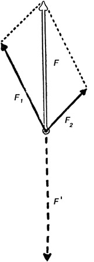
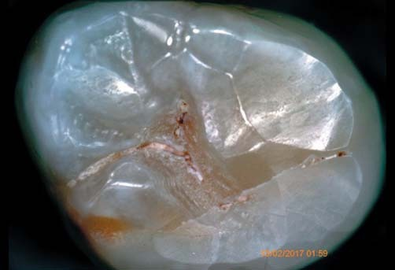
Для застосування законів статики до вивчення біомеханіки функціонування міжзубних контактних пунктів за методом побудови паралелограма сил (фото 3 а, б, в) і трикутника сил (фото 3 д, е) ми використали правило розкладання сили за двома заданими напрямками, яке є зворотною щодо задачі про визначення рівнодійної збіжних сил в одній площині. Воно зводиться до побудови, наприклад, такого паралелограма, у якого геометрична сума сил, що розкладається, — головний вектор F, спрямований у бік міжзубного контакту, є діагоналлю, а сторони, які беруть свій початок від кінця вектора, паралельні, по автоматично визначуваних на побудованій комп'ютерній схемі кутових величинах та анатомічних орієнтирах, напрямках сил F1 і F2. Таким чином, сила F розкладається за напрямками F1 і F2 на сили, що є складовими сили F (рис. 4 а, б).9, 10
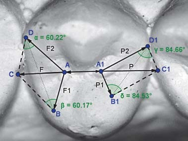
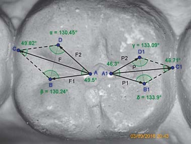
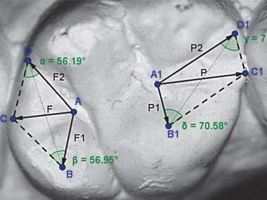
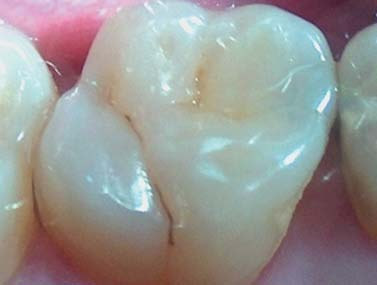
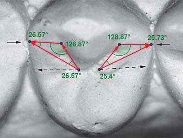
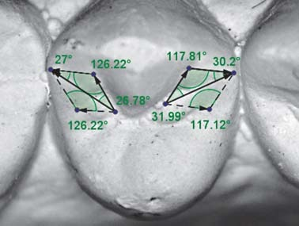
Фото 3. Комп'ютерне моделювання паралелограма сил (а, б, в) і трикутника сил (д, е) на макрофотографіях бічних зубів гіпсових моделей. Точне розміщення векторів сил і геометричної суми (головного вектора – F або P) F = F1 + F2; Р = Р1 + Р2 визначаємо на створеній комп'ютерній схемі, орієнтуючись на показники кутових величин та враховуючи розташування горбів і природних фісур на оклюзійній поверхні. Фото і схема за О. Постолакі (2016).
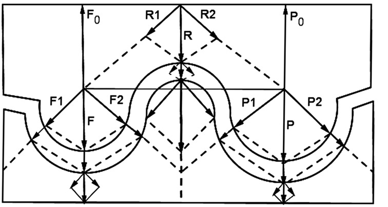
* Статикою називається розділ механіки, який вивчає умови рівноваги тіл. Рівновагою називають такий стан тіла або системи тіл, при якому вони не рухаються в даній системі відліку. Якщо вивести систему зі стану стійкої рівноваги, то вона мимоволі в нього повернеться, тобто при виведенні з положення рівноваги виникає сила, що повертає систему до рівноваги. Будь-яка фізична система прагне до стану стійкої рівноваги.8 У нормі денто-пародонтальний апарат становить собою систему стійкої рівноваги.
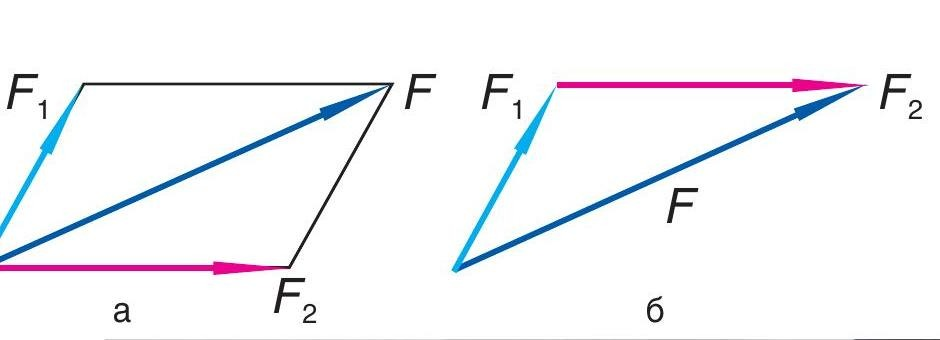
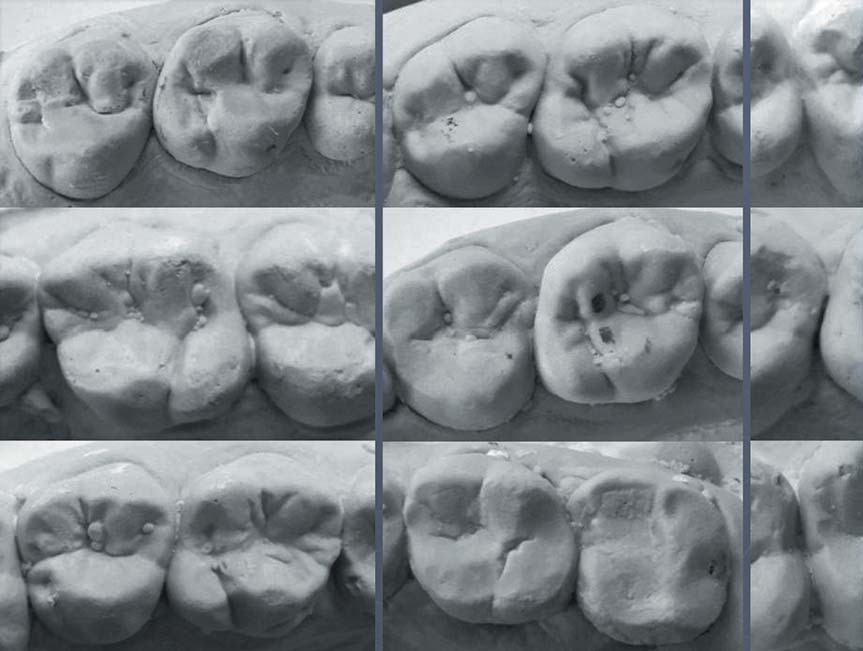
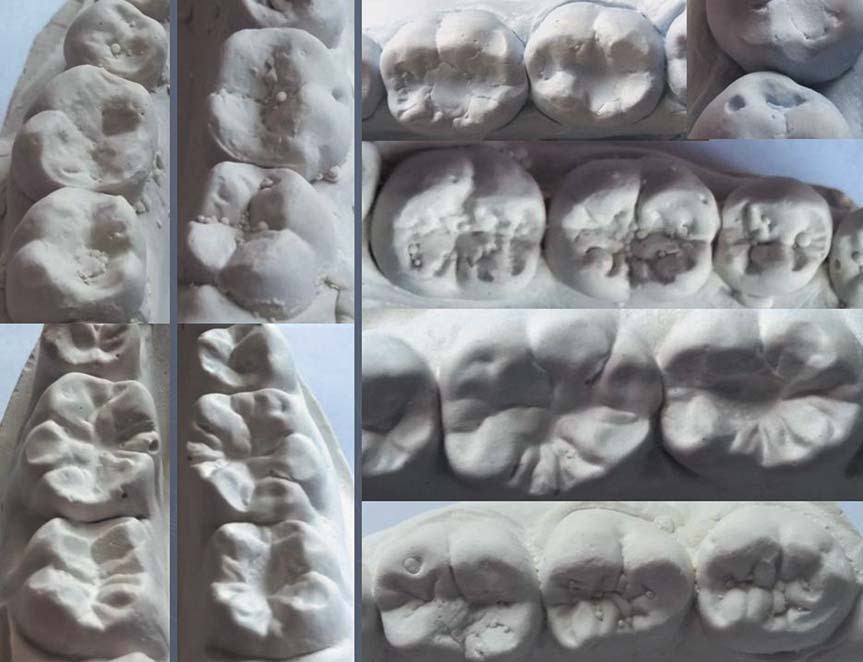
Фото 4. Просторово-топографічні та морфологічні особливості міжзубних контактних пунктів у зоні першого моляра на верхній (а) і нижній (б) щелепах при фізіологічних типах прикусу. Фото О. Постолакі.
Геометрія форм та функціональна біомеханіка
Ніколи до цього часу ми не жили в такий геометричний період. Усе навколо — геометрія!
Ле Корбюзьє (1887-1965)
Детальний аналіз діагностичних моделей і макрофотографій засвідчив, що на верхній щелепі просторове положення, форма і площа медіального міжзубного контакту першого моляра менш варіабельна, ніж дистального, в результаті різного ступеня вираженості горбів 1-го і 2-го молярів, в тому числі і додаткових горбиків, що, відповідно, позначається на кривизні проксимальних поверхонь і, зрештою, — на характері геометрії коронок зубів. Найчастіше зустрічаються квадратна, ромбоподібна або овальна форма. На нижній щелепі медіальний і дистальний контакти першого моляра варіабельні за розташуванням, формою і площею — в результаті різної кількості та вираженості горбів і додаткових горбиків, що також знаходить вияв у різній геометрії коронки (трапецієподібна, пентагональна, прямокутна) і ступені кривизни проксимальних поверхонь.
Слід зазначити, що досить часто висота коронок зубів 2-го премоляра, 1-го і 2-го молярів на обох щелепах по відношенню одна до одної можуть різнитися у середньому на 1,0-1,5 мм. Якщо провести умовну лінію по оклюзійній поверхні коронок бічних зубів у медіально-дистальному напрямку, то утворюється кілька типових кривих: 1) лінія зі слабкою кривизною в зоні 1-го моляра; 2) лінія з вираженою кривизною в зоні 1-го моляра; 3) одноступенева лінія в зоні 1-го або 2-го молярів; 4) двоступенева лінія в зоні 1-го або 2-го молярів; 5) 1-й моляр на вершині двоступеневої піраміди (фото 4 а, б). Дистальні міжзубні контакти в зоні перших молярів частіше варіюють за формою і просторовою топографією у зв'язку з анатомічними та редукційними особливостями будови і у низці випадків — незначним вестибулярним зміщенням другого моляра/ів. При цьому не порушуються оклюзійні співвідношення між зубними рядами. З цього випливає, що кожен з поданих вище варіантів міжзубних контактів у зоні бічних зубів буде характеризуватися особливою властивістю оклюзійних співвідношень і розподілом жувального навантаження в опорному апараті зубів, що позначається на функції усієї зубощелепної системи.
У той же час проведений аналіз дає підставу переглянути положення про сагітальну оклюзійну криву (криву Шпеє), яку ще називають сагітальною компенсаційною кривою через точки змикання зубів як частини кола, і розглядати її лише з точки зору умовної геометричної форми. У свою чергу, цей висновок підтверджують результати дослідження С.В. Рябова (2005) щодо того, що сагітальні оклюзійні криві не є симетричними у значної більшості обстежених і мають переважний бік. Як було встановлено в подальшому, ця обставина пов'язана зі звичним боком жування і відрізняється від відомих даних, отриманих раніше іншими авторами. Крім того, як зазначає С.В. Рябов (2005), «самі оклюзійні криві не є плавними, такими, що проходять по серединних фісурах бічних зубів. Адаптовані для проведення досліджень і побудови математичної моделі оклюзійні криві у вигляді параболи одержують лише після проведення необхідних операцій апроксимації з мінімальним коефіцієнтом похибки. Тільки в цьому випадку виходить крива, яка наближається до її загальноприйнятого вигляду».11
Зберігають свою специфічну складність діагностика і лікування проксимального карієсу, особливо бічних зубів. Крім того, незважаючи на велику кількість різних матричних систем, жодна з них не дає 100% гарантії якісного відновлення міжзубного контактного пункту.12 За даними Б.Р. Шумиловича і співавт. (2016), поширеність карієсу на контактних поверхнях зубів становить 47,70%, і велику частину становлять ураження на дистальній поверхні жувальної групи зубів12 (фото 5). На важливий клінічний аспект, який не втратив своєї актуальності, звертає увагу у своїй дисертаційній роботі І. В. Москальова (2005): «Близько 40% всіх терапевтичних стоматологічних заходів, пов'язаних з лікуванням зубів, здійснюється у зв'язку з вторинним і рецидивным карієсом, на що витрачається третина робочого часу стоматолога (Шмалько Н.М., 1984)».13
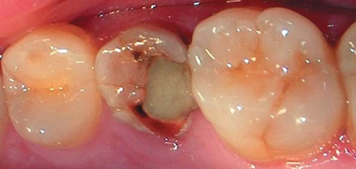
Аналіз власних результатів досліджень та отриманих нових даних з літературних джерел викликав необхідність створити додатково окрему класифікацію з описовою характеристикою просторово-топографічних і морфологічних особливостей медіального і дистального проксимальних міжзубних контактів постійних перших молярів (фото 6).
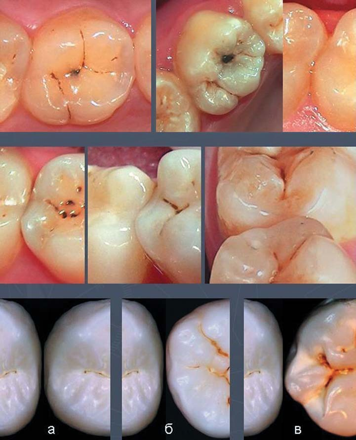
Просторово-топографічна та морфологічна класифікація міжзубних контактних пунктів у постійних перших молярів (за О. Постолакі, 2017)
Перший моляр верхньої щелепи:
- на рівні крайових емалевих валиків;
- медіальний крайовий емалевий валик вище на ±1,0 мм дистального крайового емалевого валика II премоляра;
- медіальний крайовий емалевий валик нижче на ±1,0 мм рівня дистального крайового емалевого валика II премоляра;
- дистальний крайовий емалевий валик вище на ±1,0-1,5 мм рівня медіального крайового емалевого валика II моляра.
Форма медіального міжзубного контакту:
- площинний точковий на рівні вестибулярних горбів;
- площинний лінійний на рівні вестибулярних горбів і центральної фісури;
- площинний S-подібний на рівні вестибулярних горбів і центральної фісури.
Форма дистального міжзубного контакту:
- площинний-лінійний (у вигляді літери Y) на рівні середньої 1/3 вестибулярних горбів і центральної фісури;
- площинний-лінійний (у вигляді літери S або I) на рівні середньої 1/3 схилів вестибулярних і нижній 1/3 піднебінних горбів;
- площинний-лінійний (у вигляді літери С або I) на рівні центральної фісури і середньої 1/3 піднебінних горбів.
Перший моляр нижньої щелепи:
- на рівні крайових емалевих валиків;
- медіальний крайовий емалевий валик вище на ±1,0 мм рівня дистального крайового емалевого валика II премоляра;
- медіальний крайовий емалевий валик нижче на ±1,0 мм рівня дистального крайового емалевого валика II премоляра;
- дистальний крайовий емалевий валик вище на ±1,0-1,5 мм рівня медіального крайового емалевого валика II моляра.
Форма медіального міжзубного контакту:
- площинний точковий на рівні вестибулярних горбів;
- площинний лінійний на рівні вестибулярних горбів і центральної фісури;
- площинний кутовий на рівні вестибулярного горба або центральної фісури.
Форма дистального міжзубного контакту:
- площинний-точковий (у вигляді літери Y) на рівні середньої 1/3 вестибулярного горба II моляра або площинний-лінійний (у вигляді літери Х) + до центральної фісури;
- площинний-лінійний (у вигляді літери S або I) на рівні середньої 1/3 схилів вестибулярних і нижній 1/3 язичних горбів II моляра;
- площинний-лінійний (у вигляді літери К або С) на рівні центральної фісури і середньої 1/3 вестибулярних або язичних горбів ІІ моляра.
Висновки
Таким чином, застосування діагностичних моделей, цифрової мікроскопії і фотографії забезпечило вищий рівень інформативності та розуміння анатомо-морфологічних особливостей будови проксимальних поверхонь зубів, просторової топографії міжзубних контактів і їх функціональної біомеханіки. Запропоновані науково обґрунтовані та аргументовані авторські класифікації відкривають нові можливості і перспективи у ранній діагностиці, профілактиці та лікуванні карієсу класу II і III за Блеком. Отримані результати лягли в основу модифікації методу лікувально-діагностичного препарування, яка полягає в диференційованому алгоритмі дій при виявленні прихованих каріозних уражень, виборі місця доступу для препарування і відновлення міжзубних контактних пунктів з мінімальною травматизацією твердих тканин.
Література
- Ремизов А.Н. Медицинская и биологическая физика: учебник. 4-е изд., испр. и перераб. – М.: ГЭОТАР-Медиа, 2013. – С. 1, 183-184.
- Гаврилов Е.И. Деформации зубных рядов. М.: Изд-во «Медицина», 1984, 96 с.
- Копейкин В.Н., Пономарева В.А., Миргазизов М.З. и др. Ортопедическая стоматология. Учебник. (Под ред. В.Н. Копейкина). – М.: Медицина, 1988 – 512 с.
- Герман И. Физика организма человека. Пер. с англ.: Научное издание / И. Гepман/. —Долгопрудный: Изд.-кий Дом «Интеллект», 2011. –992 с.
- Цингер А.В. Начальная физика. Ч. 1. Москва, 1910. –595 с.
- Руппель А.И. Краткий курс механики. Учебное пособие для студентов немашиностроительных специальностей вузов. – Омск: Изд-во СибАДИ, 2002. – 209 с.
- Кильчевский Н.А. Курс теоретической механики, т. I (кинематика, статика, динамика точки). Глав. ред. физ.-мат. лит.-ры изд-ва «Наука», Москва, 1972, 456 с.
- Статика. URL: https://educon.by/index.php/materials/phys/statika. (Дата обращения 02.05.2017).
- Айвазян С.А. и др. Прикладная статистика: Основы моделирования и первичная обработка данных. Справочное изд. / С. А. Айвазян, И. С. Енюков, Л. Д. Мешалкин. – М.: Финансы и статистика, 1983. – 471 с.
- Айзенберг Т.Б., Воронков И.М., Осецкий В.М. Руководство к решению задач по теоретической механике. 6-е изд. 1968. – 420 с.
- Рябов С.В. Клинико-антропометрическое обоснование оформления окклюзионной поверхности искусственных зубных рядов. Автореф. дис. ... канд. мед. наук. – Тверь, 2005. – 20 с.
- Шумилович Б.Р., Сущенко А.В., Морозов А.Н., Подопригора А.В., Воробьева Ю.Б., Малыхина И.Е. Применение самоадгезивного композита при лечении кариеса II класса по Black. Здоровье и образование в XXI веке. –2016. –№2. –С.75-79.
- Москалева И.В. Профилактика вторичного кариеса контактных поверхностей зубов методом глубокого фторирования. Автореф. дис. ... канд. мед. наук. – Тверь, 2005. – 17 с.